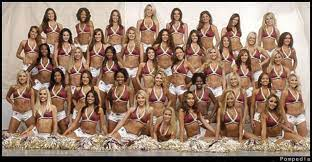

On May 25th, 1999, Daniel Marc Snyder led a group – as the majority shareholder – that purchased the Washington Redskins for $800 million dollars. The following two decades and then some would cement Snyder’s legacy as the worst owner in American professional sports history. From allegations of sexual assault as part of a ‘toxic work environment,’ to tampering with federal investigations surrounding financial fraud and even stealing money from his own investing partners, Snyder has seemingly tried like hell to run one of the greatest organizations – with 3 Super Bowl championships – in NFL history, into the ground. At long last, though, his time as the owner of the now Washington Commanders has finally come to an end.
In 2018, more than a dozen former cheerleaders for the Washington Redskins accused members of the organization of sexual assault and verbal abuse. In a team trip to Costa Rica in 2013, the cheerleaders were paid nothing more than the costs of travel, lodging, and food, and they alleged that members of the front office and wealthy team sponsors were treating them as escorts. What’s even worse is that the cheerleaders said they would either have to be topless or wearing only body paint during photoshoots. The women said they were not forced to perform sexual acts, but were forced to act as sex symbols. Many of the high-ranking employees were either fired or they retired not long after the reports came to light. Eventually Snyder and one of the former cheerleaders agreed on a $1.6 million settlement and the Redskins received a most-severe $10 million fine from the National Football League as a result of the investigation. Dan Snyder knowingly allowed, enabled, and participated in sexual assault in his place of business, and was never publicly forced to sell the team.
Towards the end of the cheerleading scandal, new evidence arose that suggested Dan Snyder actively interfered with the federal investigation. He was accused of trying to intimidate witnesses, sending private investigators to former employees homes, dodging a subpoena, and not giving a real testimony when he testified in front of Congress. Snyder was also accused of trying to pay hush money to some former employees, according to the House Oversight Committee.
In 2022, the House Oversight Committee accused Snyder and the Redskins of ‘cooking the books,’ when it was discovered that the team had two sets of financial records. It’s alleged that the Redskins were not giving the visiting teams 40% of game sales, as NFL rules mandate. Mary-Jo White – a favorite lawyer of the NFL – has been investigating the team’s financial records for the last year, but the report is still unfinished an unreleased. Of course, Snyder and the Redskins adamantly deny this accusation. Another report that arose this past football season alleged Snyder took out a $55 million credit line on behalf of the Washington Commanders, without getting it approved by minority owners.
Apart from countless scandals and instances of malpractice in the workplace that was the Washington Redskins, the team has been downright terrible since he became the majority owner. Since he took over, the Washington Redskins/Football Team/Commanders have won one playoff game. If you don’t follow NFL football, one playoff win in 24 seasons is not good. At all. Now, it is not always directly the owner’s responsibility to construct a winning roster. In fact, NFL owners are expected to hire General Mangers that completely oversee the construction of a winning roster. In Snyder’s case though, he has repeatedly made terrible hiring and firing decisions when it comes to the position of General Manager. He fired Super Bowl winning GM Charley Casserly as soon as he bought the team, as well as hiring three GMs during his tenure who all lasted less than two seasons (Marty Schottenheimer and Joe Mendes each lasted one season). Snyder has also made it a habit to get involved in NFL draft decisions, such as trading the farm away to move up in the draft for Robert Griffin III in 2012, and it was allegedly Snyder who forced the team to draft the late Dwayne Haskins in 2019, even though the Redskins’ coaching staff was not sold on the Quarterback. All-in-all, Snyder simply has no idea how to run a professional football team, nor has he instilled confidence that he knows how to hire the correct people for the job.
November 2, 2023. For all Washington Redskins or Commanders who have never seen the team win one-of-three Super Bowls, this was the greatest moment of being a fan. This was the day that news broke of Dan Snyder hiring Bank of America Securities to explore ‘potential transactions.’ Snyder had always been adamant about never selling the team, as he had grown up as a diehard fan of the club, but it’s clear that pressure from fans, the NFL, and other team owners was too much to ignore any longer. At long last, recent reports have stated that Snyder has agreed in principle to sell the Washington Commanders franchise to an investment group spearheaded by Josh Harris – owner of the Philadelphia 76ers and New Jersey Devils – and includes NBA Champion and Hall of Famer Magic Johnson, who has stake in both the LA Dodgers and LA Sparks (WNBA). Sure, the grass isn’t always greener, but it will be almost impossible for the Harris group to be worse owners than Snyder, and their history of successful sports ownership brings a light to Washington football that hasn’t existed in over two decades.